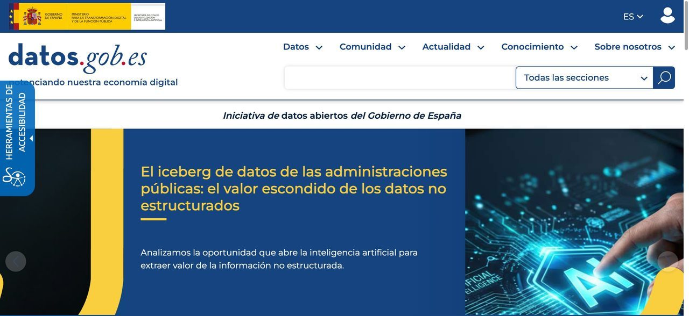
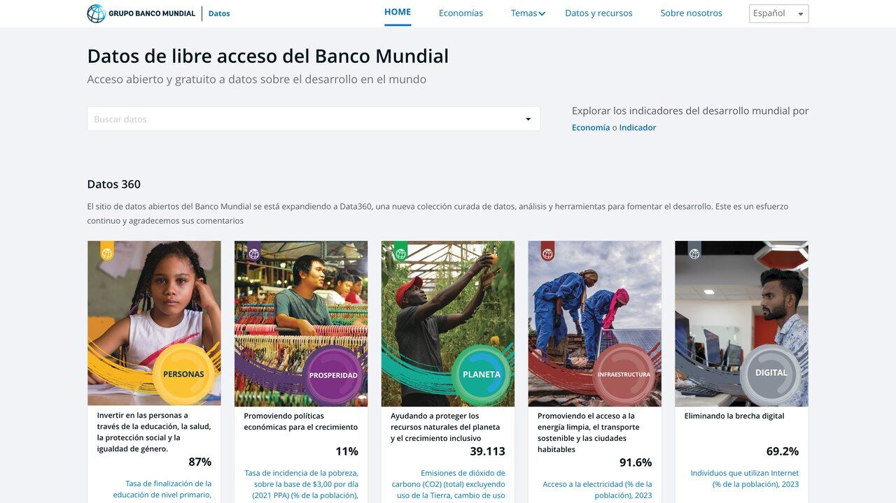

IA y datos abiertos: un asistente que consulta fuentes oficiales
Un ángulo casi inexplorado en el contenido en español sobre IA: usar estadísticas oficiales verificables, con fecha y fuente, en vez de dejar que el modelo recite una cifra de memoria. Demo en vivo con datos reales del Banco Mundial.
Casi todo el contenido sobre IA en español se centra en productividad personal: escribir mejor, automatizar correo, generar imágenes. Hay un uso mucho menos cubierto y con un valor distinto: construir asistentes que responden con datos oficiales verificables — estadísticas de organismos públicos, con fecha exacta y fuente citada — en vez de con lo que el modelo recuerde vagamente de su entrenamiento.
Esto no es solo una curiosidad técnica. Es la diferencia entre un asistente que dice "el PIB de España ronda los 1,4 billones" (una cifra que suena razonable y puede estar desactualizada o mal recordada) y uno que dice "según el Banco Mundial, el PIB de España en 2025 fue de 1.906.453 millones de dólares corrientes, con la serie actualizada el 8 de octubre de 2026" — con un número exacto, una fuente y una fecha que tú mismo puedes verificar en el organismo oficial.
El mecanismo técnico es el mismo tool use de nuestra guía sobre agentes con datos reales, aplicado esta vez a una fuente con un valor distinto: no la actualidad del dato, sino su autoridad y verificabilidad.
Consulta un dato oficial ahora mismo
Esta caja llama en directo a la API pública y gratuita del Banco Mundial, sin clave ni registro. Elige un país y un indicador, y verás el dato real más reciente disponible, con su fecha exacta.
Pulsa "Consultar" para ver el dato real, obtenido en directo desde api.worldbank.org.

Qué organismos publican datos abiertos reutilizables
El Banco Mundial de la demo es solo uno de una familia amplia de fuentes con API pública y gratuita. A nivel internacional, Naciones Unidas y la OCDE publican indicadores comparables entre países; a nivel regional, Eurostat cubre toda la Unión Europea con series históricas largas; a nivel nacional, muchos países tienen su propio instituto de estadística con datos abiertos — el INE en España, el INEGI en México, el INDEC en Argentina, el DANE en Colombia — aunque el formato y la facilidad de acceso vía API varía bastante de uno a otro.
Banco Mundial, ONU Data, OCDE — comparables entre países, ideales para contexto global.
INE, INEGI, INDEC, DANE — más detalle local, formato y facilidad de acceso variables.
El criterio para preferir una fuente internacional sobre una nacional (o al revés) depende de lo que necesites: si comparas varios países entre sí, una fuente internacional con metodología unificada como el Banco Mundial evita el problema de comparar cifras calculadas con criterios distintos en cada país. Si necesitas el máximo nivel de detalle sobre un solo país (por provincia, por sector económico concreto), la fuente nacional suele ofrecer una granularidad que la internacional no tiene.
Vale la pena mencionar también Eurostat aparte, porque su API es de las más completas de esta categoría: cubre a los 27 países de la Unión Europea con series homogéneas sobre economía, demografía, medio ambiente y mercado laboral, actualizadas con una cadencia predecible y documentadas con el mismo nivel de detalle metodológico que el Banco Mundial. Para cualquier proyecto centrado en Europa, suele ser el primer sitio donde mirar antes de buscar una fuente nacional caso por caso.
Un matiz práctico que ahorra frustración: no todos estos organismos ofrecen una API HTTP moderna con JSON. Algunos siguen publicando en formatos más antiguos (SDMX, CSV masivo para descargar) que exigen un paso extra de conversión antes de poder usarlos como herramienta de un agente en tiempo real. Antes de comprometerte con una fuente nacional concreta, comprueba si de verdad tiene una API consultable en directo o si su "dato abierto" es en realidad un archivo para descargar y procesar aparte — ambos son legítimos, pero solo el primero encaja con el patrón de esta guía sin trabajo adicional de preparación.
Por qué la fecha y la metodología importan tanto como el número
Un ejemplo concreto de por qué esto no es un detalle burocrático: si preguntas por la "tasa de desempleo" de dos países distintos, uno puede calcularla como porcentaje de la población activa que busca trabajo activamente, y otro incluir criterios distintos sobre qué cuenta como "buscar activamente" o qué edad mínima se considera población activa. Las dos cifras son igual de "oficiales", pero compararlas directamente sin ese matiz metodológico lleva a una conclusión errónea sin que nada en el número en sí lo delate.
Por eso la herramienta de la sección 3 de esta guía siempre devuelve la fuente y la fecha junto al valor: no es solo trazabilidad por trazabilidad, es la información mínima que necesita cualquiera que use ese dato para decidir si es comparable con otro que ya tenía, o si hace falta revisar la metodología de origen antes de ponerlos uno al lado del otro en una misma frase o gráfico.
El Banco Mundial, en concreto, publica junto a cada serie una nota metodológica explicando cómo se calcula y qué fuentes nacionales agrega para construirla — un nivel de transparencia sobre el propio dato que rara vez ofrece un modelo de lenguaje cuando cita una cifra de memoria, por la razón simple de que el modelo no "recuerda" una metodología, solo un número suelto sin ese contexto.

Un caso real: verificación de datos en periodismo
Un equipo de periodismo de datos recibe a diario afirmaciones de fuentes políticas o corporativas con cifras concretas ("el desempleo bajó un 2%", "la inversión extranjera se duplicó"). Verificar cada afirmación a mano contra la fuente oficial consume tiempo que casi nunca sobra en una redacción con plazos de cierre ajustados.
Un asistente con acceso a estas APIs de datos abiertos puede hacer una primera pasada automática: recibe la afirmación, identifica qué indicador y qué periodo describe, consulta la fuente oficial correspondiente, y devuelve tanto el dato real como la diferencia con lo afirmado — sin decidir por sí mismo si la afirmación es "verdad" o "mentira" (eso sigue siendo criterio editorial humano), pero ahorrando el trabajo mecánico de buscar la cifra exacta en la fuente correcta.
El resultado no reemplaza al periodista de datos, lo libera de la parte más mecánica del trabajo para dedicar el tiempo humano a lo que sí requiere criterio: decidir qué comparación es relevante, qué contexto falta, y cómo contar la historia detrás del número.
Un segundo caso, esta vez de sociedad civil: organizaciones de transparencia presupuestaria en varios países de habla hispana llevan años publicando análisis de gasto público comparando lo presupuestado con lo ejecutado. Un agente que combina un indicador oficial de gasto público (cuando el organismo lo ofrece por API, no todos lo hacen) con las cifras que la propia organización recopila manualmente de fuentes menos accesibles, puede señalar automáticamente las mayores desviaciones cada trimestre, dejando el análisis cualitativo de por qué ocurrió esa desviación al equipo humano.
El código: una herramienta de "verificar cifra oficial"
Siguiendo el mismo patrón de nuestra guía de agentes con datos reales, así se define esta herramienta para que un modelo de Claude pueda usarla:
herramientas = [{
"name": "consultar_indicador_oficial",
"description": "Consulta un indicador económico o social oficial del Banco Mundial para un país",
"input_schema": {
"type": "object",
"properties": {
"codigo_pais": {"type": "string", "description": "Código ISO2, ej. ES, MX, AR"},
"codigo_indicador": {"type": "string", "description": "Ej. NY.GDP.MKTP.CD para PIB"}
},
"required": ["codigo_pais", "codigo_indicador"]
}
}]
def consultar_indicador_oficial(codigo_pais, codigo_indicador):
url = f"https://api.worldbank.org/v2/country/{codigo_pais}/indicator/{codigo_indicador}"
datos = requests.get(url, params={"format": "json", "per_page": 5}).json()
reciente = next(r for r in datos[1] if r["value"] is not None)
return {
"pais": reciente["country"]["value"],
"año": reciente["date"],
"valor": reciente["value"],
"fuente": "Banco Mundial",
"actualizado": datos[0]["lastupdated"]
}
Fíjate en un detalle importante del diseño: la función devuelve siempre la fuente y la fecha de actualización junto al valor, no solo el número pelado. Eso obliga a que la respuesta final del modelo pueda —y deba— citar de dónde sale el dato, en vez de presentarlo como un hecho genérico sin origen verificable.
Cuando este tipo de herramienta se vuelve algo que reutilizas en varios proyectos —un chatbot de atención ciudadana, un panel interno, un asistente de investigación—, tiene sentido empaquetarla como un servidor MCP independiente en vez de copiar y pegar la misma función Python en cada proyecto nuevo. Así cualquier aplicación que hable el protocolo MCP puede conectarse a tu catálogo de indicadores oficiales sin reescribir nada, y si el Banco Mundial cambia algo en su API, lo arreglas en un solo sitio en vez de en media docena de copias dispersas.
Si mantienes varios indicadores como herramientas separadas (PIB, población, esperanza de vida, y los que añadas de otros organismos), dale a cada una un nombre y una descripción lo bastante específicos para que el modelo no confunda dos herramientas parecidas entre sí. Una descripción vaga como "obtiene datos económicos" invita al modelo a usar la herramienta equivocada cuando tienes tres candidatas igual de genéricas; una descripción concreta como "obtiene el PIB en dólares corrientes de un país desde el Banco Mundial" deja mucho menos margen de confusión, sobre todo a medida que el catálogo de herramientas de tu agente crece.
Límites que conviene conocer
Los datos oficiales también se revisan
Una cifra preliminar publicada este trimestre puede corregirse meses después cuando el organismo tiene información más completa. "Oficial" no significa "definitivo e inmutable para siempre".
La metodología varía entre países
Dos países pueden calcular "desempleo" o "inflación" con definiciones ligeramente distintas. Comparar cifras nacionales directamente sin verificar que usan la misma metodología es un error común incluso entre analistas experimentados.
El retraso de publicación no es instantáneo
Muchos indicadores económicos se publican con meses o incluso un año de retraso respecto al periodo que describen. "El dato más reciente disponible" no siempre significa "el dato de este mismo mes".
No todos los países publican con el mismo nivel de detalle
Algunos organismos nacionales tienen APIs maduras y bien documentadas; otros solo publican PDF o tablas sin estructurar. Un agente construido asumiendo la misma facilidad de acceso en todos los países fallará silenciosamente en los que no cumplen ese estándar — conviene probar explícitamente con los países que de verdad vas a cubrir, no solo con el más cómodo.
Presentar una correlación como si fuera una causa
Tener acceso fácil a muchos indicadores a la vez tienta a cruzar dos series y sugerir que una explica la otra. Un agente responsable en este terreno describe lo que los datos muestran (una correlación, una tendencia paralela) sin afirmar una relación causal que los datos por sí solos no pueden demostrar — esa interpretación sigue siendo trabajo humano.
Cómo probarlo tú mismo en diez minutos
Antes de escribir ninguna herramienta ni conectar ningún modelo, vale la pena familiarizarte con la API a mano, directamente desde el navegador o la terminal, para entender qué forma tiene la respuesta real:
- Abre en el navegador una URL como
api.worldbank.org/v2/country/ES/indicator/SP.POP.TOTL?format=jsony mira la estructura del JSON que devuelve: un array de metadatos y otro de resultados por año. - Identifica el campo de fecha y comprueba cuántos años de retraso tiene el dato más reciente disponible respecto al año actual — varía según el indicador.
- Prueba con un código de país que no exista (por ejemplo "ZZ") y observa qué devuelve la API en ese caso de error, para saber qué debe manejar tu código cuando construyas la herramienta de verdad.
- Repite el mismo indicador con dos países distintos y confirma que las unidades y el periodo son directamente comparables antes de asumirlo en tu código.
Este ejercicio de diez minutos, hecho antes de escribir la función Python de la sección 3, evita sorpresas del tipo "el campo que esperaba se llama distinto" o "esta combinación de país e indicador no tiene dato" una vez que ya has conectado la herramienta a un modelo y estás depurando dos capas de complejidad a la vez en vez de una.
Tres fuentes con API real que puedes probar hoy: INE, datos.gob.es y Eurostat
Comprobamos el 17 de octubre de 2026 que estas tres puertas responden en JSON sin clave ni registro. Son el siguiente paso natural si quieres pasar del Banco Mundial a datos más cercanos:
| Fuente | Qué ofrece | Cómo se consulta |
|---|---|---|
| INE (España) | Series de INEbase: IPC, paro (EPA), población, etc. | Servicio JSON por URL; p. ej. servicios.ine.es/wstempus/js/ES/DATOS_SERIE/<código>?nult=5 devuelve los últimos 5 datos de una serie. Documentación: API JSON del INE |
| datos.gob.es | Catálogo de conjuntos de datos de las administraciones españolas | API de catálogo en datos.gob.es/apidata/catalog/dataset (parámetro _pageSize para paginar). Sirve para localizar el dato, no siempre para leerlo directamente |
| Eurostat (UE) | Series armonizadas de los 27 países en formato JSON-stat 2.0 | ec.europa.eu/eurostat/api/dissemination/statistics/1.0/data/<tabla> con filtros por país y periodo. Guía: API de Eurostat |
Un ejemplo de por qué conviene probar antes de fiarse: al consultar una serie del IPC del INE con nult=2, la API nos devolvió como último dato diciembre de 2025, no un mes de 2026. Las series pueden quedar sin actualizar cuando el organismo cambia de base o de código. Tu herramienta debería devolver siempre la fecha del dato y avisar si es más antiguo de lo esperado, en lugar de presentarlo como «el dato actual».
Para la reutilización de esta información en España, el marco general es la Ley 37/2007, sobre reutilización de la información del sector público, que el BOE mantiene en vigor con una última actualización consolidada de 2023 (que incorpora el Reglamento (UE) 2022/868). Las condiciones concretas de cada conjunto de datos (licencia, atribución) las fija cada organismo: léelas en su ficha antes de redistribuir nada. Puedes consultar el texto en el BOE.
Ejemplo práctico: verificar una afirmación paso a paso
Supón que lees «la población de España superó los 49 millones». Así lo trabaja un asistente con la herramienta de esta guía, y así puedes pedírselo tú:
- Concretar la afirmación: indicador (población total), país (España), periodo (¿qué año?). Si falta alguno, el asistente debe preguntar en vez de suponer.
- Consultar la fuente con la herramienta:
consultar_indicador_oficial("ES", "SP.POP.TOTL"). En nuestra comprobación de hoy la API del Banco Mundial devolvía 49.355.143 personas para 2025 y 48.848.840 para 2024. - Comparar con lo afirmado y decir el resultado con su matiz: «Según el Banco Mundial (serie actualizada el 8 de octubre de 2026), en 2025 la población era de 49,36 millones; la afirmación es compatible con ese dato».
- Citar la fuente: organismo, indicador, año y fecha de actualización. Sin eso, la respuesta no vale.
- Dejar la interpretación a una persona: que una cifra coincida no explica el contexto (otras fuentes, como el INE, usan su propia metodología y pueden dar un valor distinto).
Pide al modelo en tu instrucción de sistema algo así: «Responde solo con datos devueltos por las herramientas. Si la herramienta no devuelve dato, dilo. Cita siempre organismo, indicador, año y fecha de actualización». Es corta y evita la mayoría de invenciones. Para medir si funciona, tienes la guía de cómo evaluar un agente y la de alucinaciones de la IA.